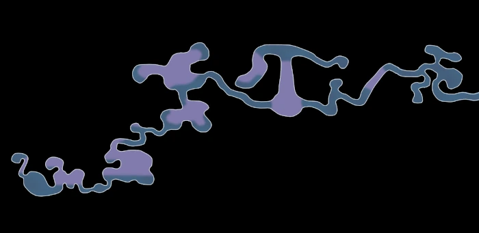

A swimmy metroidvania inspired by Ori and the Blind forest and Ynglet. Explore a place long lost, find out the cause of its fall and restore the ecosystem along your journey.
Devlog: Like a bee in water
Gameplay sketch
The core gameplay is about swimming through, jumping from droplet to droplet and climbing the terrain of this lost world. Interact with the world to open up new areas and restore its ecosystem.
Player abilities are primarily designed for movement and can be used to use enemy attacks against themselves or to open up new places to explore.
Swimming has a bit of inertia to it, while feeling satisfying to use. You can use skills to move or change direction faster. Once outside the water, your movement is limited. At some point in the game you will be able to cling onto surfaces and jump off them, slowly opening up the world in the air. When submerged in water, you can encounter water currents and various threats that you need to navigate around.
As you go, you collect Nectar, which can be used to restore the ecosystem. A restored ecosystem may open up new areas, which can grant you new abilities.
Using ProceduralPath2D to build levels
While I've been sharing some progress on BlueSky, I've not updated this site, so it's time for a bit of catch-up. Here some progress on using procedural path. After building a prototype of a new plugin for smooth shapes to build levels with, I've been testing out a workflow to explore the level design for my metroidvania game. This level is a linear mechanics demonstration level where I can test out various new concepts. Smooth curves are easy, and the editor does not grind to a halt or glitch out after filling it with plenty of elements and making shapes span large distances. That said, I've decided to still cut levels into pieces and building each piece out of 1-3 procedural curves depending on the topology. Using the procedural system, I also managed to create a simple map system.  I'm quite happy on how useful this is. Next up: it's time to share some actual gameplay design.